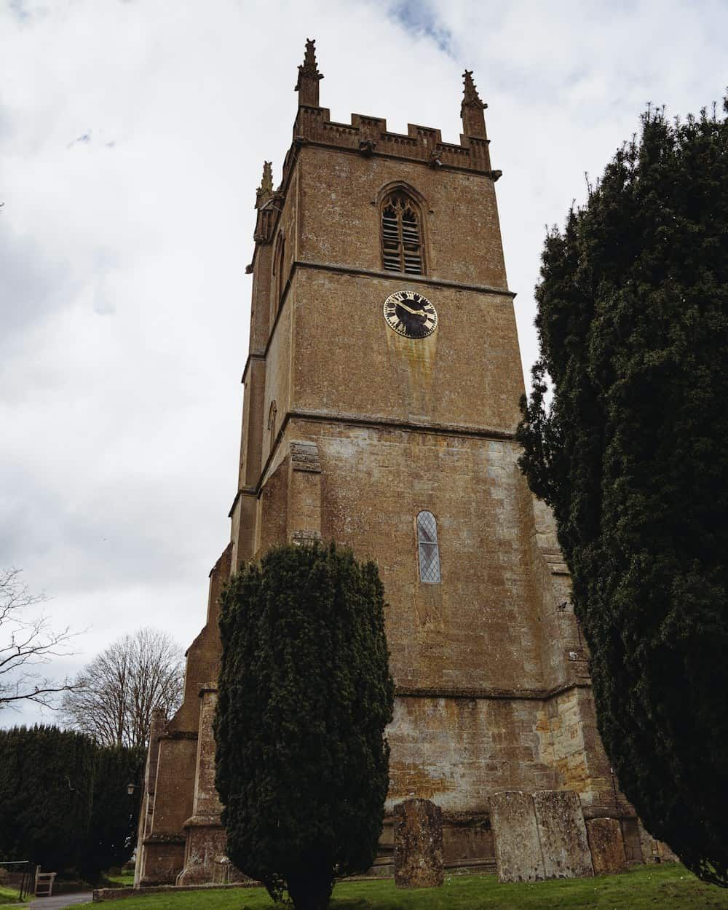

A congregation of about a hundred and sixty, in a building six hundred years older than any of us.

The building
A Norman font in a fourteenth-century nave, a Victorian chancel, a roof from 2019 and a boiler that is anybody's guess. Grade I listed, which means every one of those repairs took three years to agree.
It is open every day because a church that is locked is just a building. Nothing has been stolen in eleven years.
Vicar. In the office Tuesday to Friday mornings, and at the 8 o'clock every Sunday. Day off Monday.
Churchwardens. Between them they hold the keys, the fabric report and the institutional memory. Hall bookings go to Ruth.
Parish Safeguarding Officer. Independent of the clergy and contactable directly — the number is below and it is deliberately not buried.
Everyone who works with children or adults at risk here is DBS-checked and trained on a three-year cycle, and two adults are present at every activity. The policy is reviewed annually by the PCC and a printed copy hangs in the south porch.
If you are worried about a child or an adult at risk — here or anywhere — contact the Parish Safeguarding Officer directly, or the diocesan safeguarding adviser on 01749 685135. If someone is in immediate danger, ring 999.
Concerns about anyone in a position of authority in this parish, including the vicar, should go to the diocesan adviser rather than to us.
The historic creeds, the scriptures read seriously, and the sacraments taken as seriously as the sermon. Middle-of-the-road Anglican: robes and incense at the festivals, not every week.
The congregation disagrees internally about a good deal, and has decided that is allowed. Nobody is asked to sign anything to belong here.